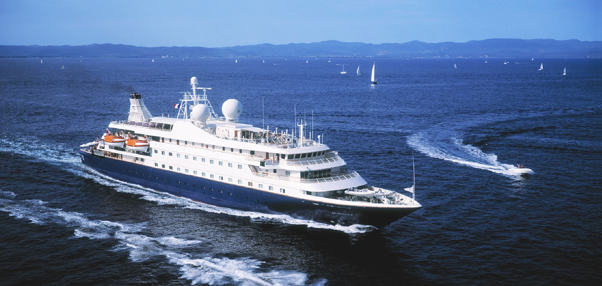

-

꿈과 희망의 현대
꿈과 희망을 향한 도전과 창조적예지로 풍요로운 내일을 창조합니다.
자세히보기
급변하는 국내외 경영 환경 속에서 세계 초우량 기업으로 발돋움 하려는 현대그룹의 힘찬 웅비가 시작됩니다.
현대가 움직이면 세계가 움직입니다. -

한국현대사 70년
현대그룹사 70년한강의 기적을 일군 그 역사의 현장에도, 우리 경제의 큰 맥이 세워진 그 감동의 순간에도, 현대가 함께 있었습니다. 현대그룹은 지금껏 걸어온 과정을 결코 잊지 않고, 한국과 세계의 미래를 변함없이 새롭게 창조해 나갈 것입니다.
자세히보기 -

부산 초고층 주상복합 ‘W’
고속엘리베이터 설치 완료현대엘리베이터가 부산 용호만의 새 랜드마크로 주목 받는 초고층 주상복합아파트 ‘W’(부산광역시 남구)의 고속엘리베이터(분속 240m 20대, 분속 180m 14대) 설치를 마쳤다고 29일 밝혔다.
자세히보기 -

현대아산
크루즈 전세선 운항사업 진출‘코스타 빅토리아호’는 7만 5천톤급(12층) 선박으로 최대 3,000여명 탑승이 가능한 규모며, ‘바다 위의 특급호텔’로 불릴 만큼 세련된 객실을 비롯해 수영장, 면세점, 레스토랑, 공연장, 조깅트랙 등의 시설을 갖추고 있다.
자세히보기
/